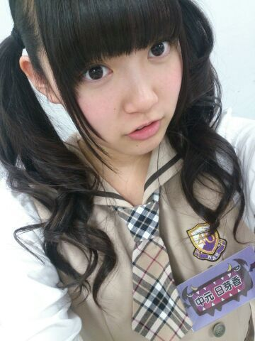

| 2014/02 05 Wed | ひめたん(*>ω<*)そ の404 |
ひめたんだよー(＊^ω^＊)ノ
姫たんじゃなくて日芽たんだよー
姫たんってかわいいなー憧れるなー
でも姫たんじゃなくて日芽たんだよー
きゅんきゅん王国が
みなさんに気に入ってもらえて
嬉しいですー♪♪
きゅんきゅん王国の挨拶はー？とか
いろいろ質問があったんだけど
みんなで徐々に作ってこー！
てことでなんかステキなの思いついたら
いつでも教えてーねっ
1ST BIRTHDAY LIVE DVD
発売になりました！
届いたよー観たよーって方は
ぜひ感想を聞かせてほしいなー
BDの人はもうちょっと待ってね＊＊
それからお知らせっ
朝日新聞さんとコラボしたムック本
「乃木坂と、まなぶ」
１年間 朝日新聞さんと一緒に
お勉強したことをまとめた本です
3月18日発売ですーよろしくね＼( ^O^ )／

愛未 (能条愛未ちゃん)とひめたん
愛未いわく
ひめたんは同じ話を
何度もするんだってー(´・ω・｀)
もーそれ聞いたよーってのが
よくあるんだそう。
おにごっこのことを
「おにご」って言ったら
めちゃめちゃ笑われた(´・ω・｀)
とんだ恥をかいた(´・ω・｀)
えーなんで？言わない？
おにごって言わないですかー？
「っこ」まで言えばいいじゃーんー
そう変わんないじゃーんー
なんで略したのーって
言われたけどー確かにご最もだけどさー
なんで？東京じゃ言わない？
千葉県民のひとりは共感してくれたよ？
住んでる地域は関係ないのかな？

そう！
今日はNOGIBINGO!2の収録でしたっ
やーなんかめっちゃ楽しかったよー
ちなみにこの写メは今日のじゃないけどねー
オンエアをお楽しみにっ( ´ω` )
ちなみに今週のNOGIBINGO!2にも
ひめたん出るよー観てねー♪

 実はひめたんビームでパンが焼けました！
実はひめたんビームでパンが焼けました！
ぜひ今度ひめたん試してみない？
ウソだー(゜ロ゜)
絶対ウソだー(゜ロ゜)
でもちょっとやってみたーい(゜ロ゜)
ひめたんびーむをもっと身近に感じたい！
近くのコンビニとかに置いてないかな？？
レトルトとか。
ちーんってするタイプのやつかー
え？ほしい？発売したらみんな買ってくれる？
コンビニ行く前にとりあ ひめたんのとこおいで？
身近に......そんな甘いこと言っちゃ(´・ω・｀)め！
ひめたんって買い物1人じゃないとできない派？
決断力がないので
基本的にひとりでは何も買えませーん(´・ω・｀)
コンビニくらいなら行ったってもいいけどー
お洋服とかひとりで買ったことないです
優柔不断な甘えん坊って損......
ひめたんはスキーしたことある？？
あっ、したことあっても...
ちょっと！察しないでよ！笑
ひめたんは「アイマス」のアニメ観た？
観てないんですー( ∀ )
川後さんがアイカツ！好きみたいよー♪♪
もんじゃとお好み焼きだったらどっち派？
ちなみに自分はシャンプーとリンスは
リンスインシャンプー派です。
はーリンスインシャンプーですか
誰も聞いてないですが
教えてくれてどうもありがとう(棒)
どっちも好きだけど
よく食べるのはお好み焼きかなー＊
 とりりーぬさんとあしゅりーぬさん（あしゅ）
とりりーぬさんとあしゅりーぬさん（あしゅ）
どっちが癒されますかー？
どっちが面倒見るの大変ですかー?
それは人によりけりだと思いますが
私はあしゅりーぬさんの方が好きでーす( ^O^ )
初彼女できたんですけど、誕生日プレゼントに
なにあげたらいいかわかんないです
ひめたんだったら何だったら嬉しいですか？
りぼん以外でおねがいします
可憐にりぼんが除外されてしまいました←
なんだろうねーひめたんにもわからんけど
マグカップとか、今の時期ならブランケットとか
どうですかね(＊^ω^＊)
気持ちが伝わればなんでも嬉しいと思うよー
がんばってね♪♪
ひめたんは雷苦手ですかー？
それが苦手ではないんです(・∀・)
ひめたん46は
今日はおやすみさせてくださいませ。
楽しみにしてくださったみなさん
ほんとごめんねー
次回やるから楽しみに待っててね(´；；｀)
いつもたくさんのコメント
本当にありがとうございますっ
焼き鳥でお肉と一緒に刺さってるのは
玉ねぎじゃなくて長ネギ？白ネギ？だってね！
間違えちゃった☆
そーいえばさー
ひめたん密かに思ってたんだけどさ
最近とりりーぬさんに関する質問が多いのねー
嬉しいけどーひめたんのことも聞いてよー
妬きやきしちゃうんだよねー(´・ω・｀)
8th個別握手会の申し込みが
スタートしたって聞きましたー
京都・名古屋で２部、
関東は３部になったって！！びっくり！
ほんと嬉しいよー
 みなさんのおかげです
みなさんのおかげです
ありがとうございますっ
前回のね握手会でね
ひめたんと握手したかったのに
売り切れちゃったーて方もいらっしゃったみたいで
やー寂しいなーって思ってたのね
次からはみなさんと
会える時間が増えるんだねー♪
だからいまから楽しみにしてるねーっ
楽しいお話たくさんしよーね？
その前に7thの個別あと２回ありますが
そっちに来てくださるみなさん
にこにこ？にたにた？して待ってるね*\(^O^)/*
(＊´・ω・＊)
コメント(517)
2014/02/05 23:48